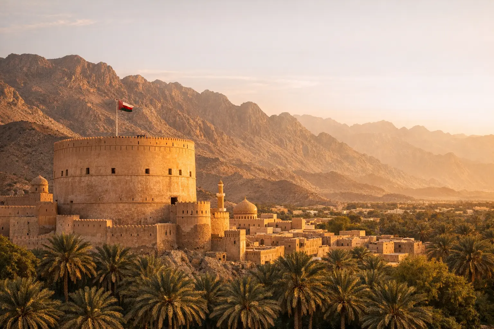

التأشيرة السياحية السعودية للمقيمين في تركيا: من يحق له وكيف يقدّم؟
دليل محدّث للمقيمين في تركيا: لماذا تحدد جنسيتك أهليتك للتأشيرة السياحية السعودية لا إقامتك، وما المسارات البديلة إن لم تكن مؤهلاً، وكيف تؤدي العمرة بها.

تأشيرات الخليج • خدمة تجهيز ومتابعة
فيزا عُمان الإلكترونية تصدر عبر البوابة الرسمية لشرطة عُمان السلطانية، وكثير من الجنسيات، ومنها المواطنون الأتراك، يمكنها دخول السلطنة دون تأشيرة لمدة تصل إلى 14 يوماً. في أويا للسياحة نحدد لك الخيار الأنسب ونجهّز ملفك وحجوزاتك.
لماذا تقدّم عن طريق أويا؟
قد يُرفض الطلب أو تضيع رسومه بسبب خطأ بسيط: حرف في الاسم لا يطابق الجواز، رقم ناقص، تاريخ مقلوب، أو صورة بمقاس غير صحيح. والرسوم الحكومية لا تُسترد عادةً. لذلك نقدّم طلب فيزا سلطنة عُمان عنك، ونرتّب ملفك بشكل صحيح من البداية.
أويا للسياحة وكالة سفر خاصة وليست جهة حكومية. رسوم خدمتنا بسيطة ونوضحها لك منفصلةً عن الرسوم الرسمية قبل البدء، والقرار النهائي للجهة المختصة وحدها.
تتيح سلطنة عُمان الدخول دون تأشيرة لمدة تصل إلى 14 يوماً لمواطني أكثر من مئة دولة، وتظهر تركيا ضمن قائمة الدول المعفاة لدى شرطة عُمان السلطانية. ويُطلب عادةً تذكرة عودة وحجز فندقي وتأمين صحي وجواز صالح 6 أشهر. وبعض الجنسيات لا تستفيد من الإعفاء إلا إذا كانت تحمل تأشيرة أو إقامة سارية من دول محددة.
إذا كانت رحلتك أطول، أو لم تكن جنسيتك ضمن قائمة الإعفاء، فالحل غالباً هو التأشيرة الإلكترونية عبر بوابة شرطة عُمان السلطانية. وتشمل تأشيرات سياحية بدون كفيل، وتأشيرة للمقيمين في دول الخليج، وتأشيرات زيارة بكفالة لأغراض عائلية أو تجارية، إضافة إلى التأشيرة المشتركة بين عُمان ودبي أو بين عُمان وقطر.
وفي أغسطس 2026 أُعلن عن تأشيرة سياحية مجانية جديدة لمدة 14 يوماً، بموجب قرار شرطة عُمان السلطانية رقم 109/2026 المنشور في الجريدة الرسمية. وهي لا تقبل التمديد، لكن يمكن تحويلها قبل انتهائها إلى فئة سياحية أخرى مدفوعة. ولم تُنشر قائمة الجنسيات المستفيدة منها حتى تاريخ تحديث هذه الصفحة، ونتابع التفاصيل الرسمية أولاً بأول.
دورنا أن نعبّئ الطلب ونراجع المستندات ونرتّب حجوزات الفنادق والطيران والتأمين، أما قرار منح التأشيرة فيعود لشرطة عُمان السلطانية وحدها.
الأنواع والخيارات
لمواطني الدول المدرجة في قائمة الإعفاء الرسمية، مع تذكرة عودة وحجز فندقي وتأمين صحي.
تأشيرة بدون كفيل تُطلب عبر البوابة الإلكترونية، بمدد مختلفة تناسب الإقامات القصيرة والأطول نسبياً.
للمقيمين في دول مجلس التعاون، وتُحدد الأهلية وفق شروط البوابة.
خيار مناسب لمن يجمع بين وجهتين، وتكون مجانية عند الوصول مباشرة من دبي أو قطر وفق ما تنشره شرطة عُمان السلطانية.
للزيارات العائلية أو التجارية، ويتقدم بها الكفيل في عُمان.
أُعلن عنها في أغسطس 2026، ولم تُحدد الجنسيات المستفيدة رسمياً بعد؛ سنخدمك بها فور اتضاح الشروط.
قائمة التحقق
القائمة العامة أدناه، وقد تختلف المتطلبات حسب الجنسية وبلد الإقامة — نؤكدها لك قبل التقديم.
كيف نعمل
أرسل جنسيتك وبلد إقامتك ونوع الزيارة، ونحدد لك التأشيرة المناسبة والمتطلبات بدقة.
نراجع أوراقك ونرشدك لاستكمال الناقص، ونجهز حجوزات الفندق والطيران والتأمين عند الحاجة.
نتولى تعبئة الطلب وتقديمه عبر القناة الرسمية المعتمدة ونتابع حالته أولاً بأول.
نبلغك فور صدور القرار ونرسل التأشيرة الإلكترونية، ونساعدك في إكمال باقي ترتيبات السفر.
أويا للسياحة جهة خدمات سفر تساعدك في تجهيز الطلب ومتابعته، وقرار منح التأشيرة يعود للجهات الرسمية المختصة وحدها.
ابدأ الآن
أرسل بياناتك الأساسية عبر النموذج، ويتواصل معك مختص التأشيرات خلال وقت قصير لتأكيد الأهلية والمتطلبات.
آخر مراجعة لمعلومات هذه الصفحة:
المصادر الرسمية — تحقّق منها دائماً قبل السفر:
أويا للسياحة وكالة سفر خاصة ولا تتبع أياً من هذه الجهات. الأنظمة تتغير، ونؤكد لك المتطلبات السارية وقت تقديم طلبك.
أسئلة وأجوبة
تظهر تركيا ضمن قائمة الدول المعفاة من التأشيرة لدى شرطة عُمان السلطانية، لزيارات تصل إلى 14 يوماً مع تذكرة عودة وحجز فندقي وتأمين صحي. وللإقامة الأطول تُطلب تأشيرة إلكترونية مسبقاً، ونتحقق لك من الشروط الحالية قبل السفر.
يُقدَّم الطلب عبر بوابة التأشيرة الإلكترونية لشرطة عُمان السلطانية مع صورة الجواز والصورة الشخصية والحجوزات. نتولى عنك تعبئة الطلب ورفع المستندات ومتابعته حتى صدور القرار.
أُعلن عنها في أغسطس 2026، وهي منفصلة عن الإعفاء من التأشيرة، ولا تقبل التمديد لكن يمكن تحويلها إلى تأشيرة سياحية مدفوعة قبل انتهائها. لم تُنشر قائمة الجنسيات المستفيدة حتى تحديث هذه الصفحة.
توجد تأشيرة مشتركة بين عُمان ودبي وأخرى بين عُمان وقطر، وتكون مجانية عند الوصول مباشرة من دبي أو قطر وفق ما تعلنه شرطة عُمان السلطانية. نساعدك في التحقق من أهليتك وترتيب برنامج يجمع الوجهتين.
يُطلب التأمين الصحي عادةً ضمن شروط الدخول بدون تأشيرة، ونوصي به في جميع الحالات، ونرتّبه لك مع الحجوزات.
من دليل أويا
دليل محدّث للمقيمين في تركيا: لماذا تحدد جنسيتك أهليتك للتأشيرة السياحية السعودية لا إقامتك، وما المسارات البديلة إن لم تكن مؤهلاً، وكيف تؤدي العمرة بها.

كل ما يحتاجه المواطن التركي والعربي المقيم في تركيا لتقديم ملف شنغن قوي: أين تقدّم، وما الأوراق، وما الأخطاء التي تؤدي إلى الرفض.
تأشيرات أخرى
فيزا الإمارات (فيزا دبي) من أكثر التأشيرات طلباً لدى المقيمين في تركيا. في أويا للسياحة نساعدك في اختيار النوع المناسب، 30 أو 60 يوماً، لدخول واحد أو متعدد، أو ترانزيت، ثم نجهّز ملفك ونتابعه حتى صدور القرار.
قد لا تحتاج إلى فيزا قطر أصلاً، فكثير من الجنسيات، ومنها المواطنون الأتراك، تدخل قطر دون تأشيرة مسبقة، بينما يتقدم آخرون عبر منصة «هيّا» (Hayya). في أويا للسياحة نحدد لك المسار الصحيح ونجهّز طلبك كاملاً.
فيزا البحرين الإلكترونية تُطلب عبر البوابة الرسمية لحكومة البحرين، وتتوفر بصلاحيات تبدأ من أسبوعين وتصل إلى 5 سنوات. في أويا للسياحة نختار معك النوع المناسب ونجهّز ملفك ونتابعه حتى صدور القرار.
أصبح طلب فيزا الكويت إلكترونياً منذ إطلاق وزارة الداخلية منصة «Kuwait Visa» في يوليو 2025، وهي تُصدر التأشيرات السياحية والعائلية والتجارية. في أويا للسياحة نجهّز طلبك ونتابعه، ونراجع الشروط المحدّثة قبل كل تقديم.
التأشيرة الخليجية الموحدة (وتُعرف إعلامياً بـ«شنغن الخليجية») لم تُطلق رسمياً حتى تاريخ تحديث هذه الصفحة في نوفمبر 2026. هنا نجمع لك آخر ما أُعلن رسمياً، ويمكنك تسجيل اهتمامك عبر واتساب لنبلغك فور إطلاقها.
خدمة شخصية من البداية للنهاية
أخبرنا بوجهتك وتواريخك وعدد المسافرين، ويصلك عرض مفصّل خلال وقت قصير — بدون أي التزام.